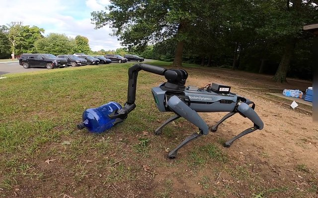
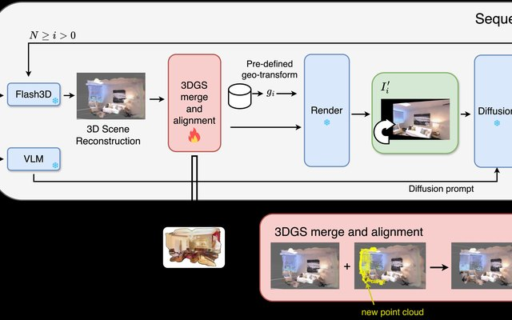
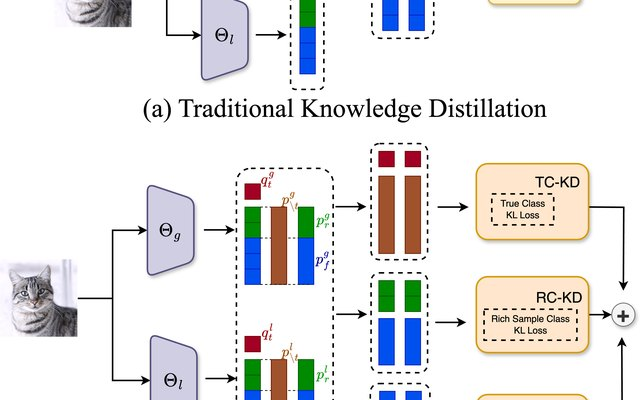

Changlin Song 宋昌霖
PhD student in Computing at the Australian National University, supervised by Dylan Campbell. I work on computer vision, 3D vision and spatial intelligence, and on LLM agents for robot control.
News
- Extreme Amodal Face Detection accepted to WACV 2026 as an oral.
- Started my PhD at ANU.
Research

The agent authors the skill. Physics runs it.
Ongoingwith GE and the University of Pennsylvania
An LLM agent writes whole-body skills for a Boston Dynamics Spot, and a physics-based sampling MPC runs them outdoors with no demonstrations and no per-task training.

Extreme Amodal Face Detection
Changlin Song, Yunzhong Hou, Michael Randall Barnes, Rahul Shome, Dylan Campbell
WACV 2026 OralDetecting faces that are partly or entirely out of frame.


FedDistill: Global Model Distillation for Local Model De-Biasing in Non-IID Federated Learning
Changlin Song, Divya Saxena, Jiannong Cao, Yuqing Zhao
arXiv 2024De-biasing local training in federated learning with group distillation.
- Rethinking Test Time Scaling for Flow-Matching Generative Models
Qingtao Yu, Changlin Song, Minghao Sun, Zhengyang Yu, Vinay Kumar Verma, Soumya Roy, Sumit Negi, Hongdong Li, Dylan Campbell · arXiv 2025 · Code - Overcoming growth-induced forgetting with sparsity in task-agnostic continual learning
Yuqing Zhao, Jiannong Cao, Divya Saxena, Xiaoyun Liu, Changlin Song, Bo Yuan, Julie McCann · Neurocomputing 2026
Education
- PhD in Computing, Australian National University2025 – now
- Master of Machine Learning and Computer Vision (with Commendation), ANU2023 – 2025
- B.Eng. in Computer Science and Technology, Shenzhen University2018 – 2022
Teaching and service
- Tutor at ANU for Computer Vision, Advanced Topics in Computer Vision, Advanced Topics in Machine Learning, and Computer Graphics.
- Reviewer for IEEE Transactions on Mobile Computing and AJCAI 2025.